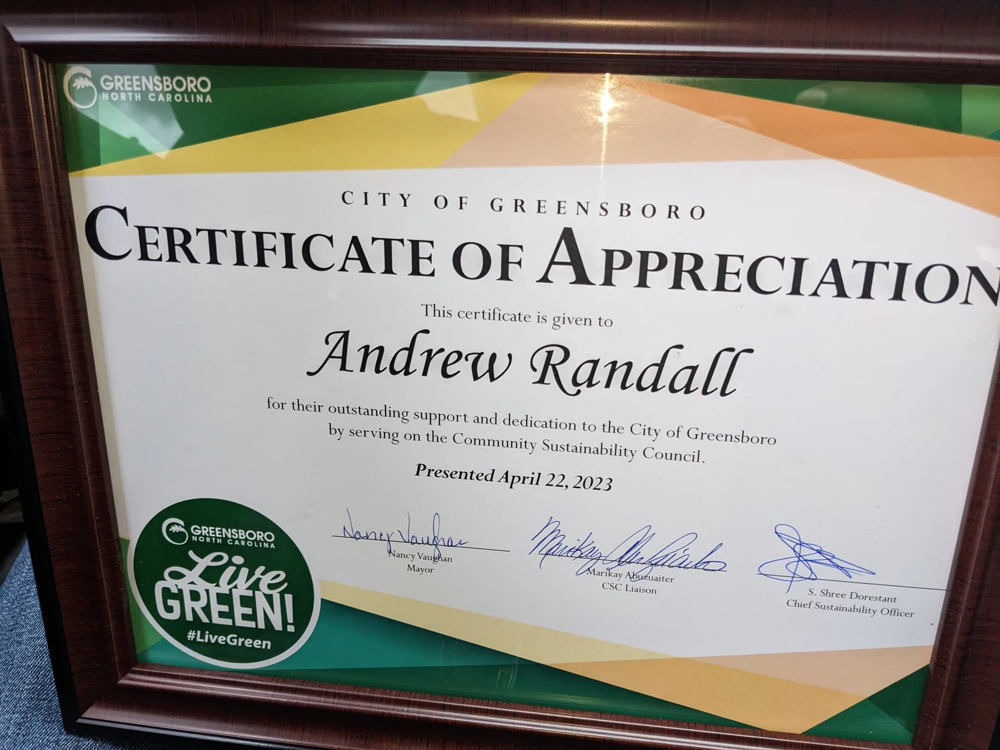
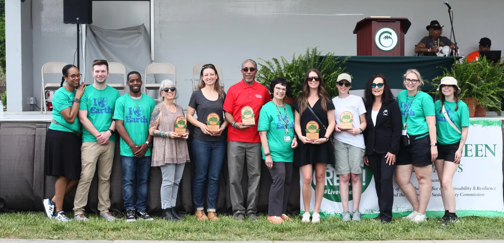
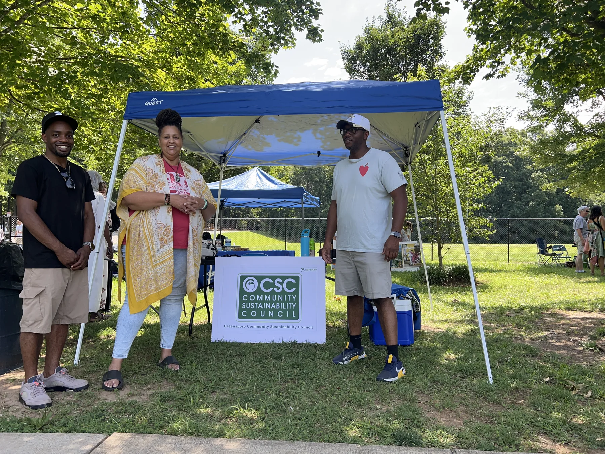

Clarify your position
Show the right buyer why your capability, category, buying path, and outcome belong together.
The person responsible for the work
You should not have to translate the same problem between a strategist, a web team, an automation vendor, and a public-sector advisor. This practice connects those decisions in one place.
Experience you can use
Andrew Randall built the public-sector record on this site in under five years. It was not a five-year sales education: it was the application of a broader 17-year career in customer-facing work, relationship development, complex selling, strategy, and follow-through to a market with formal requirements and long buying cycles.
That perspective helps you address the full problem—not just the website, the CRM, the proposal, or the workflow in isolation. The work is grounded in missed follow-up, difficult handoffs, changing requirements, technical products, and buyers who need clear evidence.
You get one accountable partner who can connect business strategy, market readiness, technical implementation, public-sector buying, and real-world delivery.
Understand how people decide, what earns trust, and where the buying conversation becomes unclear.
Build consistent follow-through so good opportunities do not depend on isolated bursts of effort.
Connect your market position, evidence, timing, and stakeholder context.
Build registration and vendor-portal readiness, marketing material, market intelligence, event strategy, proposals, compliance, and follow-through with practical experience.
Turn recurring operating problems into dashboards, workflows, websites, decision tools, and reusable structure.
Why this matters to you
The value comes from seeing where those layers disconnect—and building the practical bridge between them.
Show the right buyer why your capability, category, buying path, and outcome belong together.
Create the digital infrastructure your team can rely on in daily work.
Move through formal procurement, cooperative vehicles, compliance, evidence, and long cycles with more confidence.
Connect what your team promised to work the buyer can see in the real world.
Strategy that can become a working tool
The broader body of work includes customer websites, assessment flows, cited public-data dashboards, interactive maps, structured archives, forms, Google-connected data workflows, reporting systems, and automated quality checks. That build experience changes what a strategy conversation can produce for you.
Carry the offer, message, proof, and next step into websites, capability material, presentations, and event follow-up people can actually use.
Use assessments, dashboards, maps, evidence libraries, and structured reports to help customers or teams understand what matters and act on it.
Build forms, trackers, document flows, calendars, notifications, data checks, and practical automations around the way work really moves.
Design systems that distinguish verified facts from assumptions, protect sensitive information, and make responsibility clear as the work changes.
What you can expect
You will see the installed work, submitted output, or functioning system—not confidence used as a substitute for evidence.
We will name the real constraint, the actual workflow, and the decision the work needs to improve.
Your result should not depend on one person remembering every follow-up, handoff, or next step.
Your sensitive business, customer, and pursuit information will not be used as borrowed credibility.
Automation should remove repeated work without hiding the source, owner, or decision.
Your finished system should survive real work, changing inputs, and the people responsible for using it.
Public-minded work
Community engagement and civic recognition reinforce the principle behind the consulting work: strategy matters when it becomes a durable result for people.

Recognition

Leadership

Engagement
Work directly with Andrew